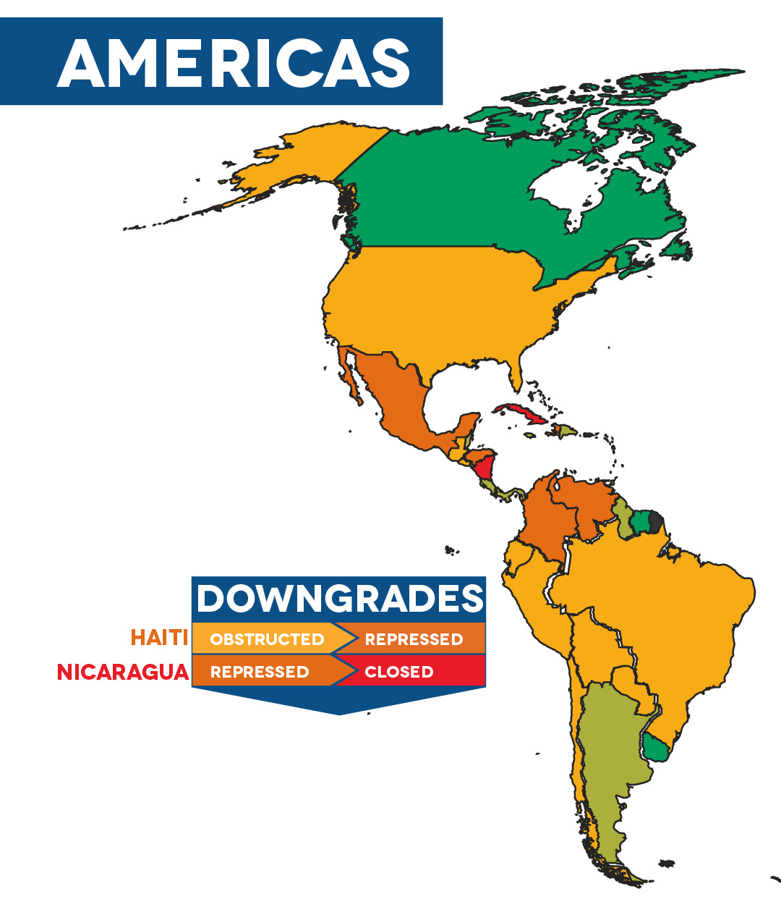
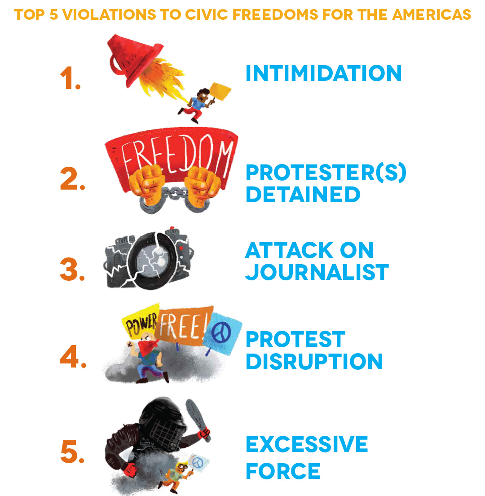

People Power Under Attack 2021 - Americas
Ratings Overview
In some ways, little changed in civic space in the Americas during the reporting period. Space for civil society continued to be restricted by intimidation, harassment and criminalisation. Violations of protesters’ rights and attacks on the media have persisted. Year after year, HRDs and journalists face extreme violence; once more the Americas were the region where the CIVICUS Monitor recorded the most killings of these crucial voices. Women, Indigenous and environmental defenders and youth and labour leaders were frequent targets.
However, although general trends are similar to previous years, in the past year there has been an insidious deepening of restrictions as many governments have entrenched or expanded their control over civic space. This is the case, for instance, in Guatemala, where attacks against defenders are rising and the government pushed through a sweeping NGO law. In Venezuela the government has sought to restrict civil society funding and operation while escalating attacks on the media and HRDs. In Colombia, acute violence against social leaders and protesters has worsened with little protective response from the government.
This concerning scenario is reflected by an overall decline in civic space ratings in the region. Since the CIVICUS Monitor was launched in 2016, only one country in the Americas had been rated closed: Cuba. Now it is joined by Nicaragua, following the scorched-earth policy of President Daniel Ortega’s regime toward all critical voices as it sought to maintain its hold on power. Our analysis has also documented a civic space decline in Haiti, following prolonged political turmoil and rising insecurity.
Of 35 countries in the Americas, there are 10 where civic space is open. Nine are rated as narrowed and another nine as obstructed. There are five countries in the repressed category and two where civic space is considered closed. Most people in the region live in countries where civic space is obstructed (64 per cent) or repressed (23 per cent).
In Haiti, combined political, humanitarian and security crises have led to a significant decline in civic space. Before his assassination in July 2021, President Jovenel Moïse had been ruling by decree for over a year in the absence of an elected legislature. He issued executive decrees on matters such as national security that affected civic freedoms. Opposition groups organised frequent anti-government protests, often repressed by police using excessive force. Violence against journalists and HRDs took place with impunity. Since Moïse’s killing, the country has struggled with spiralling insecurity and natural disasters amid political turmoil. In this context, relief efforts by humanitarian groups have been hindered. Although Haiti’s civic space rating dropped to repressed, the country’s civil society has remained determined to rebuild. They have been key voices pushing for participation and local solutions as a response to these crises.
Meanwhile in Nicaragua, a stunning crackdown on civil society, media and the opposition paved the way for farcical presidential elections that took place with seven opposition candidates behind bars. 2021 was marked by widespread civic space violations, including arbitrary detention and enforced disappearances, the closure of dozens of CSOs, raids on independent media and censorship, systematic attacks on HRDs and journalists and the enactment of repressive laws. As of December 2021, more than 140 people have been detained for exercising their fundamental rights; reports of torture and ill-treatment of political prisoners are prevalent. While the situation has worsened drastically, it is also the culmination of several years of evolving repression. The prevailing atmosphere of fear, the harsh punishments for anyone expressing criticism and the complete ban on protests demonstrate in no uncertain terms that the space for civil society in Nicaragua is currently closed.

Civic Space Restrictions
In the Americas, intimidation, detention of protesters and attacks on journalists were the most frequent violations of civic freedoms documented by the CIVICUS Monitor during the reporting period. Also among the top restrictions were the disruption of protests and the use of excessive force by law enforcement agencies during protests.

Intimidation
Arbitrary police interrogations, threats of trumped-up charges, smear messages on social media: these are just a few of the tactics that have been used to intimidate those speaking up and defending rights in the Americas. Intimidation aims to scare those perceived as enemies and deter them from continuing their work and advocacy. Across the region, both state and non-state forces have used these strategies against HRDs, journalists, political opposition and civic leaders. In the past year the CIVICUS Monitor documented incidents of intimidation in at least 19 countries of the Americas, often coupled with tactics such as criminalisation or surveillance.
In Nicaragua, at least 16 journalists were summoned as witnesses in investigations against civil society groups. When questioning the reporters, police officers threatened them with charges if they refused to speak without lawyers present. Cuban authorities have used similar tactics, regularly sending police patrols to monitor HRDs’ and dissidents’ houses and threatening reprisals against them and their families. In Honduras, police employed surveillance to intimidate groups demanding justice for the killing of environmental activist Berta Cáceres in 2016 and activists calling for the release of Guapinol water defenders, a group of eight activists detained for over two years. In Bolivia, HRDs and journalists were named in lists calling for the lynching of perceived enemies of the governing party. Polarisation has hindered accountability for violations: for instance, while telling investigators from the Inter-American Commission on Human Rights of her experience during Bolivia’s post-electoral conflict, a journalist faced yells and insults from the audience, which forced her to stop her testimony.
Journalists were frequent targets of threats and other types of intimidation, particularly when covering crime or questioning public resource management. Such cases were widespread in the region, recorded in countries including Ecuador, Honduras and Venezuela. Journalists who exposed corruption in COVID-19 vaccine distribution in Panama and Peru received death threats. In Mexico, members of the media in Iguala have faced systematic threats from criminal gangs. For instance, at least six reporters were threatened in an online messaging group; they said continuous harassment had led to self-censorship by the local media. In Brazil, public officials from the Rio de Janeiro mayor’s office organised monitoring of hospitals and blocked journalists from covering COVID-19 stories by intimidating news crews and interviewees.
Protest violations: detention, disruption and excessive force
When protesting against government policies, calling for rights guarantees and demanding change, protesters in the Americas were often disrupted, met with excessive force and put at the risk of detention. In this reporting period, the CIVICUS Monitor documented these three types of protest restrictions in 21 out of the 35 countries in the region. The most frequent restriction, detention, was recorded in 40 per cent of reports from the Americas.
Colombia’s law enforcement agencies brutally repressed protesters over several months of a national strike against government policies. Between 28 April and mid-May 2021, local human rights group Temblores recorded that over a thousand protesters had been detained and hundreds injured; they further recorded at least 43 killings by perpetrators suspected to be security agents. In several cases, people were injured or killed with live ammunition. In Peru, law enforcement officers responded to protests against the removal of former president Martín Vizcarra with indiscriminate force, using firearms and firing less-lethal weapons such as teargas canisters directly at protesters. Within a week of protests, at least two people had been killed and over two hundred injured. In Guatemala, at least 43 people were detained in protests against budget cuts, with videos showing police dragging and beating protesters.
In Cuba, the authorities responded to direct actions by campaigning artists with disruption, surveillance and intimidation. After more than 200 people protested against the repression of Movimiento San Isidro, the government agreed to negotiate but backtracked within days, increasing its harassment of critical voices . Many of those who had taken part in the protest were put under police surveillance and told they could not leave their homes. When rare mass protests erupted in July 2021, security forces detained hundreds during the protests and in the following weeks. By October 2021, dozens had been convicted for protesting, often in judicial proceedings lacking due process.
Indigenous peoples, members of other excluded groups and environmental groups were frequent targets of repression during protests. Indigenous defenders in Brazil were met with repression, including when protesting in front of the agency charged with protecting Indigenous rights. Canadian police responded to the largest civil disobedience actions in the country’s history by detaining protesters in astounding numbers, with over a thousand arrests of activists during the Fairy Creek anti-logging protests between May and September 2021, many of them Indigenous people. In Chile, Indigenous Mapuche protesters continued to face repression. Concerns about biased law enforcement remained in the USA, despite a change in the federal government and the new administration’s public commitments to inclusivity. Detention and excessive force against anti-racism protesters persisted, with several states proposing and implementing anti-protest laws as a response to Black Lives Matter protests.
Attacks on journalists
A free and vibrant media is vital to the full exercise of human rights, enabling people to access public interest information, exposing abuses by powerholders and providing platforms for debate. But journalists often do their work in the Americas at great personal risk. Attacks on journalists’ personal integrity were recorded by the CIVICUS Monitor in at least 19 countries of the region during the reporting period.
In Mexico, which continues to be among the most deadly countries in the world for journalists, reporters were often assaulted by police while covering news stories in public spaces, targeted during protests and attacked by public officials and their supporters. In numerous cases reporters were assaulted and detained despite identifying themselves as members of the media. In some cases these attacks resulted in killings, taking place with impunity in broad daylight. Reporters were killed in at least six other countries of the region.
During this reporting period, we documented shooting attacks against journalists in countries such as Brazil, Chile, Colombia and Ecuador. In Venezuela, a regional office of the national journalists’ association was set on fire and destroyed. In Argentina, a journalist was beaten, kicked and punched by two assailants while live on his radio programme. One of the attackers was a former local official in the municipality where the reporter exposed alleged corruption.
Attacks often happened as reporters and news crews covered protests, with media workers exposed to hostility and assaults. In Paraguay, at least five journalists were injured in anti-government protests and others had their equipment stolen. Before President Moïse’s assassination in Haiti, attacks on journalists were so common during anti-government protests that the local press association questioned whether reporters were deliberately being targeted. In countries such as Colombia, Panama and the USA, we documented cases of media workers who were covering protests being assaulted by the police even when they clearly identified themselves.
Although attacks by law enforcement officers were more frequent, we also recorded several cases of news crews being assaulted by protesters. In Guatemala, for instance, a reporter was beaten with an iron pole by a protester who accused her of being a ‘feminist infiltrator’. In Peru, journalists reporting on campaign rallies were attacked by supporters of candidates across the political spectrum.
Positive developments
In the past year, some of the most important positive developments for the region came through justice systems holding perpetrators of violations to account. In Mexico, perpetrators of the 2017 killings of reporters Javier Valdez Cárdenas and Miroslava Breach Velducea were convicted and sentenced. In Honduras, one of the intellectual authors behind the assassination of Berta Cáceres finally faced trial and was found guilty. While such rulings remain the exception, they provide much needed hope for justice in a region where impunity has been the rule. The sense of impunity emboldens perpetrators of attacks and killings, contributing to enduring violence against HRDs and journalists in the Americas. There were also many cases of magistrates dismissing legal proceedings against journalists and recognising these as censorship attempts, as well as clearing HRDs of charges and acquitting protesters.
In Canada, the courts recognised the frequent misconduct by officers when policing environmental protests and their obstruction of media covering these, denying an injunction against the protests. Brazil’s Supreme Court established a precedent holding the state responsible in cases of journalists being injured by security forces while covering protests. In the USA, Florida’s abusive anti-protest law was blocked following a lawsuit filed by CSOs in a federal court, an important ruling amid a wave of efforts to criminalise protests. Across the region, civil society pushed back against restrictive laws through the courts and adopted litigation as an important avenue to demand rights guarantees.
Despite the pandemic and its repercussions, civil society organising has continued to prove powerful. The most illustrative example is that of the ‘marea verde’, the feminist ‘green tide’ for reproductive rights. In December 2020, Argentina’s feminist movements achieved a landmark victory with the approval of a legal abortion law that they had campaigned for over decades. The effects of this achievement reverberated throughout Latin America and the Caribbean, where most countries criminalise abortion and some have outright bans. In April 2021, a court ruling decriminalised abortion in cases of rape in Ecuador. In September 2021, Mexico’s Supreme Court was unanimous in saying that the criminalisation of abortion is unconstitutional. In the same month, Chile’s women’s movements celebrated the preliminary approval of a law decriminalising abortion. In every one of these countries, activists’ reactions were consistent: these historic victories, achieved in the face of considerable backlash, were just the beginning, and the struggle continues for the expansion and full implementation of these rights.
Country of concern: El Salvador
In his first year of government, Salvadoran President Nayib Bukele made drastic moves such as occupying the legislative assembly with a military contingent. He has consistently maintained an antagonistic stance toward the media since taking office, often directly discrediting journalists who criticise his government. With high levels of disenchantment with established parties and politicians, public support for the populist leader has remained high. In February 2021, Bukele’s allies gained a supermajority in the legislature. This was followed by quick undermining of the separation of powers: newly elected lawmakers supportive of the president replaced five judges in the Supreme Court’s Constitutional Chamber; they then published a resolution enabling consecutive presidential re-election, something previously banned by the constitution. Since then, civil society has been shut out of participation in the legislative process and government allies have sought to make regressive legal changes. Bukele and his supporters have attacked anti-corruption organisations and stigmatised those protesting against his authoritarianism. This scenario raises concerns for civic space and the rule of law in El Salvador.